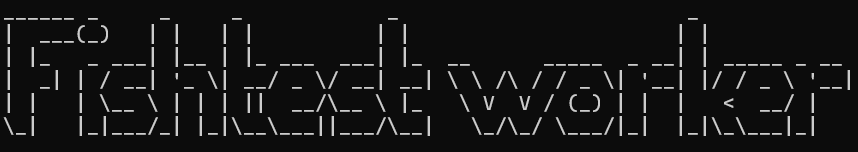

Stockfish testing framework
Written by: Matthew
Donating compute

If you have a spare computer lying around, why not use it to run the Fishtest worker?
Stockfish is a computer program which is widely regarded as the strongest contemporary chess engine. As of writing, it is rated around 3600ish elo points. Compared to the chess grandmaster Magnus Carsen, Stockfish is rated 800 points higher. Humanity will never surpass computers in chess playing ability ever again. But we obviously need stronger chess engines in our world because of reasons I guess. lol.
Around 2017, the people over at Google Deepmind developed a competing chess engine named "AlphaZero", which at the time went 0 losses in a game of 100 rounds against the then latest version of Stockfish 10. This feat was achieved due to AlphaZero utilizing neural network approaches rather than Stockfish's classical evaluation methods.
The Deepmind team moved onto other projects, but being their mission is to "build AI responsibly to benefit humanity", they left all the research papers behind for the Stockfish developers to study and incorporate into the next version of Stockfish. On the 2nd of September, 2020, Stockfish 12 shipped with the first generation of the Efficiently Updatable Neural Network (ƎUИИ), essentially becoming the spiritual successor to AlphaZero. The ƎUИИ architecture has allowed the engine to continue getting better up until the modern day. It became so successful that since version 16, classical evaluation methods has been removed entirely due to it being weaker objectively weaker than the ƎUИИ approach.
This is where you come into the picture! Training neural networks requires massive amounts of computation in order for it to "learn" from itself (supervised and reinforcement learning). To speed this process up, the Stockfish developers have an adjacent project known as the Fishtest worker, which allows volunteers all around the world to donate computing power during this training process of the Stockfish chess engine.
It doesn't take long to get the Fishtest worker set up, the official instructions are linked here. It supports all major operating systems including Windows, MacOS and Linux. It only relies on the CPU for its computation, so you don't even need a good GPU unlike say the Folding@home project. After you get it going, the worker runs automatically and requires no human intervention. I believe it also self-updates so you could potentially set up a computer in the dusty corner of your room with an internet connection and it will keep running for years with no problems.
While running the Fishtest worker, you might want to change some values which control how it operates. Notably, how many cores (concurrency) you want to dedicate to the worker as well as how much RAM you want to dedicate to the program. This is useful if you want to free up resources so that you can run other things on that computer, as Fishtest will fully utilize all the cores you allocate to it.
Your CPU does need to meet a certain performance threshold in order to run Fishtest; if your computer is too slow it will kick you out of the worker pool. Realistically though, your old computer will probably work fine. For example, my dual core A6-5400k from 2012, doesn't meet the minimum required performance (just by barely though), however my fourth generation Pentium dual core from 2014 was able to meet the performance requirements. TL;DR if you have four CPU threads then you are golden.
Since the Fishtest worker will max out your CPU, keep an eye on thermals and power consumption. Your computer's fan will ramp up, and its side panels will get warm. If you are specifically choosing a computer to run Fishtest, note that newer processors consume less power while delivering the same amount of performance due to IPC improvements, so try to use the newest generation of processor you have access to.
If you do manage to set up a machine dedicated to running the Fishtest worker, please do e-mail me the setup! I unfortunately don't have the hardware for it (also electricity is expensive) but I would otherwise have it all set up because it's pretty cool to contribute to something which will be used by millions of people. For example, chess.com uses the Stockfish project for their board analysis feature. There is also a leaderboard on the Fishtest website for how many total CPU hours you have contributed to the project, so if that is your jam then that could be another reason to get involved.